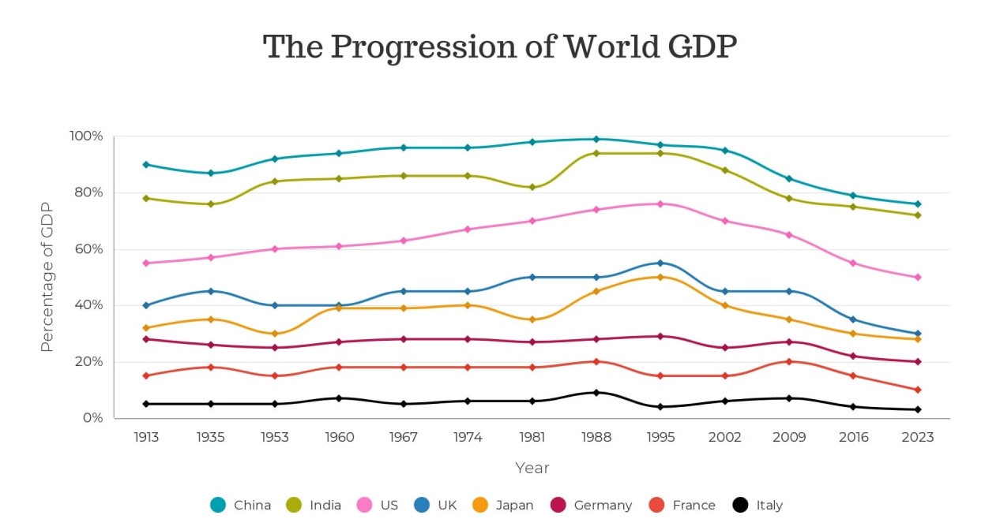

Background
The visualization chart above was extracted from the Bank of America which illustrates the Global output (measured in gross domestic product, GDP) from the beginning of the common era (1600) of the Ancient super-civilizations.
Critique
Data
Data represented in the chart is messy as it has a huge jump from the starting point to its first year as shown on the x-axis label (e.g., 1 to 1600, 1600 to 1913). The spacing increments on the x-axis varies because of missing data. Data shown is also sloppy as there are many overlapping data to show on which country has progress the most over the years.
Idiom
The idiom used in this visualization chart is a 100% stacked area chart. Considering the chart is an non-intuitive presentation, it may be unfamiliar to many.
It is at this point that the misconception arises that values overlap, implying that they all begin at 0. The truth is that each series representation begins where the previous one ends.
Overuse of different colors makes it difficult to distinguish one from another, resulting in viewers having a hard time to see the region encompassed by each of the countries.
Because of what was mentioned above, it also affects the chart for being able to demonstrate the trends over time. The range of values on the x-axis (e.g., years) is inconsistent with no equal interval between start and end year.
Mock up #2

The idiom used in the improvised visualization chart will be turned into a line chart so that the values can be depicted easily.
Originally, x-axis label represent the years but it would be readjusted and y-axis label would remain unchanged.
The only difference was that now there will be an indication labels on both the x and y-axis to reduce viewers confusion about the chart.
Suggested to have mouse over so there would be easily show the data and percentage of each year clearer.